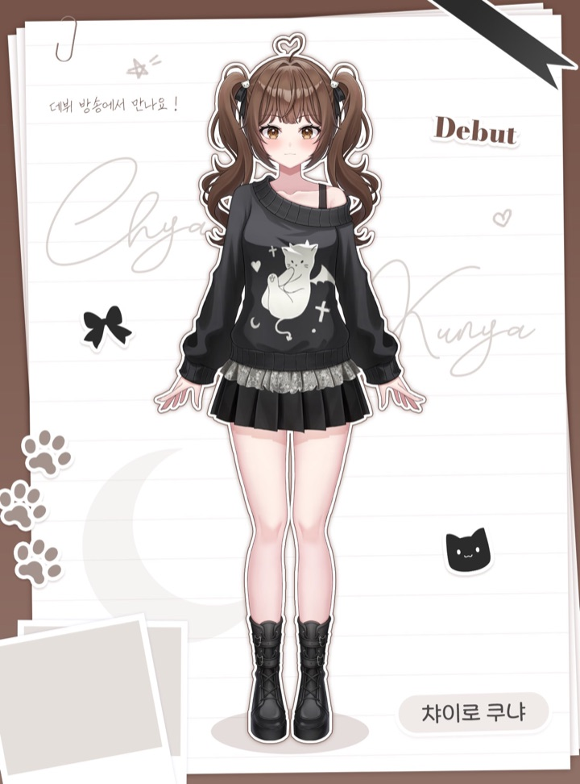

Contents
주요 컨텐츠
저챗
저스트 채팅. 하루 이야기, 고민 상담, 쿠냥이들과 도란도란 수다 떠는 시간.
종합 게임
장르 가리지 않는 종합 게임 방송. 힐링부터 호러·소울라이크까지 폭넓게.
노래
가끔 찾아오는 노래 방송. 잔잔한 발라드부터 신나는 애니송까지.
갈색 고양이 버추얼 스트리머, 챠이로 쿠냐
저챗으로 도란도란, 게임으로 와글와글, 노래로 몽글몽글. 느긋하고 다정한 INFP 고양이가 오늘도 방송에서 쿠냥이들을 기다려요.
“천천히 놀다 가요, 쿠냥이 ﾐ๑•ﻌ•๑ﾐ”


저스트 채팅. 하루 이야기, 고민 상담, 쿠냥이들과 도란도란 수다 떠는 시간.
장르 가리지 않는 종합 게임 방송. 힐링부터 호러·소울라이크까지 폭넓게.
가끔 찾아오는 노래 방송. 잔잔한 발라드부터 신나는 애니송까지.
어디서 만날까냥
치지직에서 방송하고, 유튜브에 클립 올리고, X로 소식 전해요.